Lost Is Not Alone
God meets people in places they thought they were only passing through.


Jacob thought he was sleeping in the middle of nowhere. God called it holy ground.
God meets people in places they thought they were only passing through.
Genesis 28 is printed before the paper explains it.
A four-page mini paper made to be left for whoever finds it next.